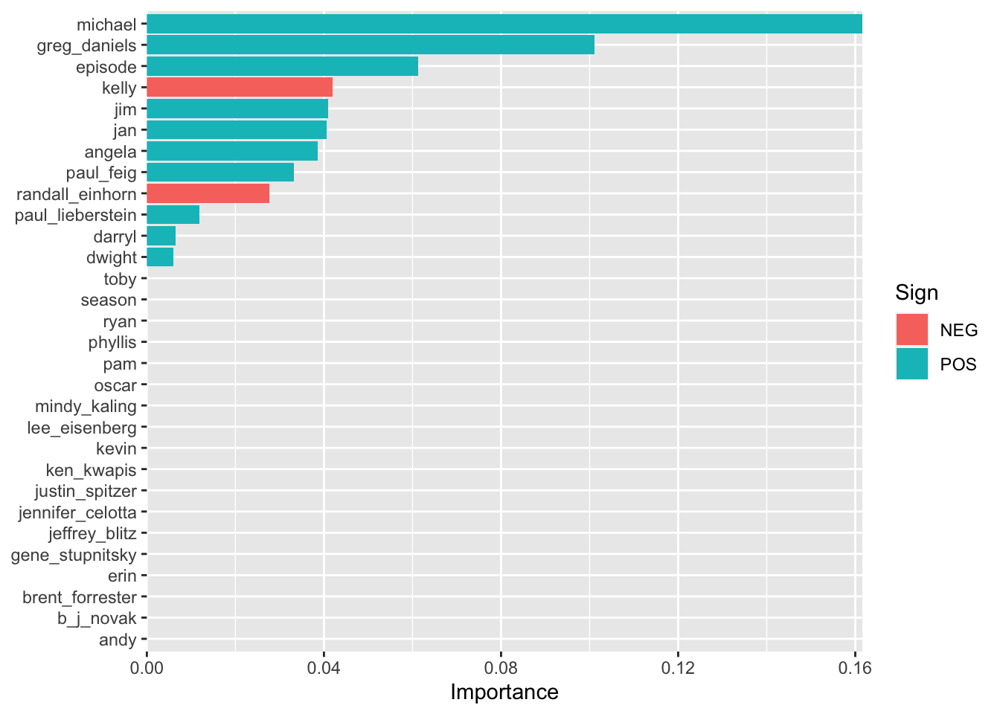
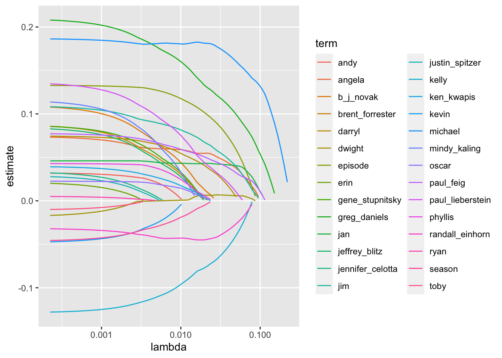
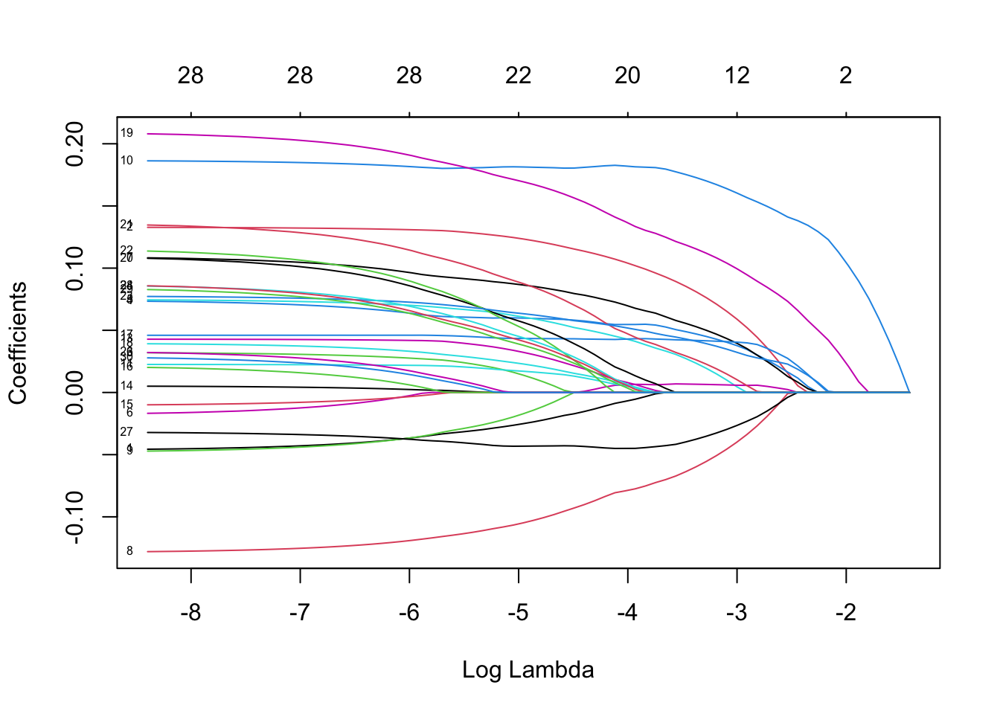
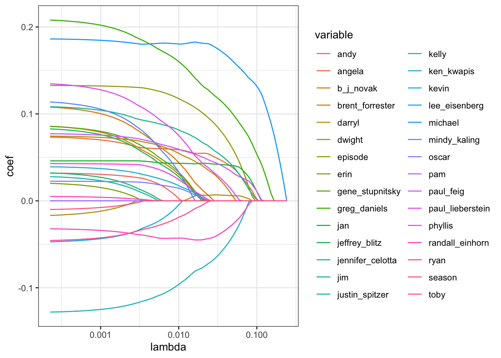

3 glmnet
3.2 lasso 實作
- 這篇文章摘自 Julia Silge 在 2020/5/17 寫的 blog 連結
- 主要目的，是用 lasso regression，去預測
The Office這個美國暢銷影集的某集 IMDB ratings
3.2.1 Explore the data
# ratings_raw <- readr::read_csv("https://raw.githubusercontent.com/rfordatascience/tidytuesday/master/data/2020/2020-03-17/office_ratings.csv")
#
# remove_regex = "[:punct:]|[:digit:]|parts |part |the |and"
#
# office_ratings <- ratings_raw %>%
# transmute(
# episode_name = str_to_lower(title),
# episode_name = str_remove_all(
# episode_name, remove_regex
# ),
# episode_name = str_trim(episode_name),
# imdb_rating
# )
#
# office_info <- schrute::theoffice %>%
# mutate(
# season = as.numeric(season),
# episode = as.numeric(episode),
# episode_name = str_to_lower(episode_name),
# episode_name = str_remove_all(episode_name, remove_regex),
# episode_name = str_trim(episode_name)
# ) %>%
# select(season, episode, episode_name, director, writer, character)
#
# characters <- office_info %>%
# count(episode_name, character) %>%
# add_count(character, wt = n, name = "character_count") %>%
# filter(character_count > 800) %>%
# select(-character_count) %>%
# pivot_wider(
# names_from = character,
# values_from = n,
# values_fill = list(n = 0)
# )
#
# creators <- office_info %>%
# distinct(episode_name, director, writer) %>%
# pivot_longer(director:writer, names_to = "role", values_to = "person") %>%
# separate_rows(person, sep = ";") %>%
# add_count(person) %>%
# filter(n > 10) %>%
# distinct(episode_name, person) %>%
# mutate(person_value = 1) %>%
# pivot_wider(
# names_from = person,
# values_from = person_value,
# values_fill = list(person_value = 0)
# )
#
# office <- office_info %>%
# distinct(season, episode, episode_name) %>%
# inner_join(characters) %>%
# inner_join(creators) %>%
# inner_join(office_ratings %>%
# select(episode_name, imdb_rating)) %>%
# janitor::clean_names()
#
# saveRDS(office, "model_example/glmnet/office.rds")
office = readRDS("./data/office.rds")
office
#> # A tibble: 136 × 32
#> season episode episode_name andy angela darryl dwight
#> <dbl> <dbl> <chr> <int> <int> <int> <int>
#> 1 1 1 pilot 0 1 0 29
#> 2 1 2 diversity day 0 4 0 17
#> 3 1 3 health care 0 5 0 62
#> 4 1 5 basketball 0 3 15 25
#> 5 1 6 hot girl 0 3 0 28
#> 6 2 1 dundies 0 1 1 32
#> 7 2 2 sexual harassm… 0 2 9 11
#> 8 2 3 office olympics 0 6 0 55
#> 9 2 4 fire 0 17 0 65
#> 10 2 5 halloween 0 13 0 33
#> # … with 126 more rows, and 25 more variables: jim <int>,
#> # kelly <int>, kevin <int>, michael <int>, oscar <int>,
#> # pam <int>, phyllis <int>, ryan <int>, toby <int>,
#> # erin <int>, jan <int>, ken_kwapis <dbl>,
#> # greg_daniels <dbl>, b_j_novak <dbl>,
#> # paul_lieberstein <dbl>, mindy_kaling <dbl>,
#> # paul_feig <dbl>, gene_stupnitsky <dbl>, …- 要拿來預測用的資料，n = 135, p = 32
- 變數說明：
- imdb_rating: 要預測的目標 y (連續型)
- episode_name 是 ID 欄位
- season 有被我當 predictor，因為我猜不同季的 rating會不同(例如一開始rating還好，到中間口碑變很好所以rating高，到最後幾季又開始拖戲和爛尾所以 rating 低)
- episode 也有被我當 predictor, 因為我猜不同 episode 的 rating 可能也不同 (例如每季剛開播，跟接近結束，可能 rating 較高，中間 rating 較低)
- andy, angela, …, justin_spitzer 共 28 個變數，都是人名，裡面的數值，表示該演員在這一集裡面，講過多少次話。這些也被我當 predictor，我猜有些演員很討喜，他講越多話 rating 可能越好。
- imdb_rating: 要預測的目標 y (連續型)
- 整體看一下，有沒有 missing，以及分佈的狀況：
skimr::skim(office)| Name | office |
| Number of rows | 136 |
| Number of columns | 32 |
| _______________________ | |
| Column type frequency: | |
| character | 1 |
| numeric | 31 |
| ________________________ | |
| Group variables | None |
Variable type: character
| skim_variable | n_missing | complete_rate | min | max | empty | n_unique | whitespace |
|---|---|---|---|---|---|---|---|
| episode_name | 0 | 1 | 3 | 31 | 0 | 132 | 0 |
Variable type: numeric
| skim_variable | n_missing | complete_rate | mean | sd | p0 | p25 | p50 | p75 | p100 | hist |
|---|---|---|---|---|---|---|---|---|---|---|
| season | 0 | 1 | 4.85 | 2.20 | 1.0 | 3.00 | 5.0 | 6.00 | 9.0 | ▆▇▅▇▃ |
| episode | 0 | 1 | 12.66 | 7.52 | 1.0 | 5.75 | 13.0 | 19.00 | 28.0 | ▇▅▇▆▂ |
| andy | 0 | 1 | 18.10 | 18.20 | 0.0 | 2.75 | 13.5 | 28.00 | 75.0 | ▇▃▂▁▁ |
| angela | 0 | 1 | 8.85 | 9.77 | 0.0 | 3.00 | 5.0 | 12.00 | 52.0 | ▇▂▁▁▁ |
| darryl | 0 | 1 | 4.62 | 7.59 | 0.0 | 0.00 | 0.0 | 7.25 | 43.0 | ▇▂▁▁▁ |
| dwight | 0 | 1 | 36.49 | 19.14 | 4.0 | 22.00 | 32.5 | 49.00 | 87.0 | ▅▇▃▂▂ |
| jim | 0 | 1 | 35.07 | 18.10 | 0.0 | 22.00 | 31.0 | 44.25 | 91.0 | ▂▇▃▂▁ |
| kelly | 0 | 1 | 5.22 | 5.85 | 0.0 | 1.00 | 3.0 | 8.00 | 28.0 | ▇▂▁▁▁ |
| kevin | 0 | 1 | 8.78 | 6.67 | 0.0 | 4.00 | 7.0 | 13.00 | 31.0 | ▇▅▃▁▁ |
| michael | 0 | 1 | 70.37 | 37.67 | 0.0 | 51.75 | 76.5 | 95.00 | 159.0 | ▃▃▇▃▁ |
| oscar | 0 | 1 | 7.62 | 7.12 | 0.0 | 2.00 | 6.0 | 11.00 | 38.0 | ▇▃▁▁▁ |
| pam | 0 | 1 | 27.42 | 17.17 | 0.0 | 16.00 | 25.0 | 33.00 | 81.0 | ▅▇▃▁▁ |
| phyllis | 0 | 1 | 5.46 | 5.32 | 0.0 | 2.00 | 4.0 | 7.00 | 27.0 | ▇▂▁▁▁ |
| ryan | 0 | 1 | 6.16 | 8.47 | 0.0 | 1.00 | 4.0 | 8.00 | 60.0 | ▇▁▁▁▁ |
| toby | 0 | 1 | 4.69 | 7.26 | 0.0 | 0.00 | 2.0 | 7.00 | 37.0 | ▇▁▁▁▁ |
| erin | 0 | 1 | 5.35 | 9.06 | 0.0 | 0.00 | 0.0 | 9.00 | 52.0 | ▇▁▁▁▁ |
| jan | 0 | 1 | 5.04 | 12.68 | 0.0 | 0.00 | 0.0 | 0.00 | 73.0 | ▇▁▁▁▁ |
| ken_kwapis | 0 | 1 | 0.10 | 0.31 | 0.0 | 0.00 | 0.0 | 0.00 | 1.0 | ▇▁▁▁▁ |
| greg_daniels | 0 | 1 | 0.17 | 0.38 | 0.0 | 0.00 | 0.0 | 0.00 | 1.0 | ▇▁▁▁▂ |
| b_j_novak | 0 | 1 | 0.13 | 0.34 | 0.0 | 0.00 | 0.0 | 0.00 | 1.0 | ▇▁▁▁▁ |
| paul_lieberstein | 0 | 1 | 0.13 | 0.34 | 0.0 | 0.00 | 0.0 | 0.00 | 1.0 | ▇▁▁▁▁ |
| mindy_kaling | 0 | 1 | 0.18 | 0.39 | 0.0 | 0.00 | 0.0 | 0.00 | 1.0 | ▇▁▁▁▂ |
| paul_feig | 0 | 1 | 0.10 | 0.31 | 0.0 | 0.00 | 0.0 | 0.00 | 1.0 | ▇▁▁▁▁ |
| gene_stupnitsky | 0 | 1 | 0.11 | 0.31 | 0.0 | 0.00 | 0.0 | 0.00 | 1.0 | ▇▁▁▁▁ |
| lee_eisenberg | 0 | 1 | 0.11 | 0.31 | 0.0 | 0.00 | 0.0 | 0.00 | 1.0 | ▇▁▁▁▁ |
| jennifer_celotta | 0 | 1 | 0.09 | 0.28 | 0.0 | 0.00 | 0.0 | 0.00 | 1.0 | ▇▁▁▁▁ |
| randall_einhorn | 0 | 1 | 0.11 | 0.31 | 0.0 | 0.00 | 0.0 | 0.00 | 1.0 | ▇▁▁▁▁ |
| brent_forrester | 0 | 1 | 0.10 | 0.31 | 0.0 | 0.00 | 0.0 | 0.00 | 1.0 | ▇▁▁▁▁ |
| jeffrey_blitz | 0 | 1 | 0.08 | 0.27 | 0.0 | 0.00 | 0.0 | 0.00 | 1.0 | ▇▁▁▁▁ |
| justin_spitzer | 0 | 1 | 0.08 | 0.27 | 0.0 | 0.00 | 0.0 | 0.00 | 1.0 | ▇▁▁▁▁ |
| imdb_rating | 0 | 1 | 8.37 | 0.51 | 6.8 | 8.10 | 8.3 | 8.70 | 9.7 | ▁▃▇▅▂ |
- 全部欄位都沒有 missing， y 的分佈蠻不錯的常態
- 這邊再做一個 EDA ，看看 episode 和 rating有沒有關係 (是不是每一季越到後面的集數，rating會越高？)
office %>%
ggplot(aes(episode, imdb_rating, fill = as.factor(episode))) +
geom_boxplot(show.legend = FALSE)
- 看起來的確有這個趨勢啊！
3.2.2 Train a model
3.2.2.1 split data
library(rsample)
set.seed(1234)
office_split <- initial_split(office, strata = season)
office_train <- training(office_split)
office_test <- testing(office_split)
# 資料太少，不用 cv ，改用 bootstrap
set.seed(1234)
office_boot <- bootstraps(office_train, strata = season)3.2.2.2 preprocessing
library(recipes)
office_rec <- recipe(imdb_rating ~ ., data = office_train) %>%
update_role(episode_name, new_role = "ID") %>% # episode 不把他當 predictor
step_zv(all_numeric(), -all_outcomes()) %>% # zero variance 對 回歸問題都會造成影響
step_normalize(all_numeric(), -all_outcomes()) # lasso 需要做 normalize3.2.2.3 specify model
library(parsnip)
library(tune)
lasso_spec <- linear_reg(penalty = tune(), mixture = 1) %>%
set_engine("glmnet")- 可以看到，訂 model 的時候，我 specify 他的 penalty 要用 tuning 的，然後 mixture設為1 (就會是 lasso)
3.2.2.4 workflow setting
library(workflows)
lasso_wf = workflow() %>%
add_recipe(office_rec) %>%
add_model(lasso_spec)
lasso_wf
#> ══ Workflow ════════════════════════════════════════════════
#> Preprocessor: Recipe
#> Model: linear_reg()
#>
#> ── Preprocessor ────────────────────────────────────────────
#> 2 Recipe Steps
#>
#> • step_zv()
#> • step_normalize()
#>
#> ── Model ───────────────────────────────────────────────────
#> Linear Regression Model Specification (regression)
#>
#> Main Arguments:
#> penalty = tune()
#> mixture = 1
#>
#> Computational engine: glmnet3.2.2.5 hyper parameter setting
library(dials)
hyper_param_meta = lasso_spec %>%
parameters() %>%
finalize(office_train)
hyper_param_meta
#> Collection of 1 parameters for tuning
#>
#> identifier type object
#> penalty penalty nparam[+]- 從 hyper parameter 的 meta data table，可看出：
- identifier: penalty ，是這個超參數的 id
- object: nparam[+] 的意思是，他是 numeric parameter，
+表示已有設定 range 在裡面
- identifier: penalty ，是這個超參數的 id
- 我們可以這樣看到他的 range，是在 log10 的尺度下，從 -10 到 0
hyper_param_meta %>%
pull_dials_object("penalty")
#> Amount of Regularization (quantitative)
#> Transformer: log-10
#> Range (transformed scale): [-10, 0]- 我想用 latin_hypercube，幫他在 feature space 中均勻撒 50 個點
my_grid = grid_latin_hypercube(hyper_param_meta, size = 50)
my_grid %>%
arrange(penalty)
#> # A tibble: 50 × 1
#> penalty
#> <dbl>
#> 1 1.12e-10
#> 2 2.20e-10
#> 3 3.64e-10
#> 4 4.34e-10
#> 5 7.01e-10
#> 6 1.42e- 9
#> 7 1.98e- 9
#> 8 3.41e- 9
#> 9 4.02e- 9
#> 10 9.39e- 9
#> # … with 40 more rows3.2.2.6 model fitting
3.2.2.6.1 tune hyper parameter
# 開平行運算
library(doParallel)
cl <- makePSOCKcluster(4) # Create a cluster object
registerDoParallel(cl) # register
library(yardstick)
# fitting
set.seed(130)
lasso_tune <-
tune::tune_grid(
object = lasso_wf,
resamples = office_boot,
metrics = metric_set(rmse, rsq),
grid = my_grid,
control = control_resamples(save_pred = TRUE, save_workflow = TRUE)
)
# 關平行運算
stopCluster(cl)- 看一下 tune 完後，最佳的 penalty 訂為多少
final_param = lasso_tune %>% select_best(metric = "rmse", maximize = FALSE)
final_param
#> # A tibble: 1 × 2
#> penalty .config
#> <dbl> <chr>
#> 1 0.0481 Preprocessor1_Model44- 是 0.0481234
- 來看一下 tunning 的過程：
lasso_tune %>%
collect_metrics() %>%
ggplot(aes(x = penalty, y = mean, color = .metric)) +
geom_errorbar(
aes(ymin = mean - std_err, ymax = mean + std_err),
alpha = 0.5
) +
geom_line(size = 1.5) +
geom_vline(xintercept = final_param$penalty, color = "blue", lty = 2) +
facet_wrap(~.metric, scales = "free", nrow = 2) +
scale_x_log10() +
theme_bw() +
theme(legend.position = "none")
- nice，可以看到 lasso 的確有幫助到結果 (但看 r-square 可以發現頗慘烈，才 15% 而已)
3.2.2.7 finalize workflow & model
- 最後，用這組最佳參數，去 finalize 我們的 model
final_lasso_wf = lasso_wf %>% finalize_workflow(final_param) # finalized workflow
final_lasso_fit <- final_lasso_wf %>% fit(office_train) # finalized model3.2.3 Prediction
- 對測試集做預測
# 對測試集做預測
office_test_res <- bind_cols(
stats::predict(final_lasso_fit, office_test), # 預測值
office_test %>% select(imdb_rating) # 真值
)
office_test_res
#> # A tibble: 36 × 2
#> .pred imdb_rating
#> <dbl> <dbl>
#> 1 8.56 7.6
#> 2 8.80 8.2
#> 3 8.33 8.2
#> 4 8.67 8.2
#> 5 8.39 7.9
#> 6 8.46 8.2
#> 7 8.41 8.3
#> 8 8.26 8
#> 9 8.00 8.2
#> 10 8.31 8.5
#> # … with 26 more rows3.2.4 Evaluation
office_metrics <- yardstick::metric_set(rmse, rsq, mae)
office_metrics(
data = office_test_res,
truth = imdb_rating,
estimate = .pred
)
#> # A tibble: 3 × 3
#> .metric .estimator .estimate
#> <chr> <chr> <dbl>
#> 1 rmse standard 0.428
#> 2 rsq standard 0.109
#> 3 mae standard 0.343- hmm… r-square 實在是差強人意啊～
3.2.5 Explaination
3.2.5.1 變數重要性
- 先來看一下我們 fit 出的 model:
# parsnip model
parsnip_model = final_lasso_fit %>%
fit(office_train) %>%
pull_workflow_fit()
coef_df = parsnip_model %>%
tidy() %>%
arrange(desc(abs(estimate)))
coef_df
#> # A tibble: 31 × 3
#> term estimate penalty
#> <chr> <dbl> <dbl>
#> 1 (Intercept) 8.37 0.0481
#> 2 michael 0.162 0.0481
#> 3 greg_daniels 0.101 0.0481
#> 4 episode 0.0613 0.0481
#> 5 kelly -0.0420 0.0481
#> 6 jim 0.0410 0.0481
#> 7 jan 0.0406 0.0481
#> 8 angela 0.0387 0.0481
#> 9 paul_feig 0.0332 0.0481
#> 10 randall_einhorn -0.0277 0.0481
#> # … with 21 more rows- 可以看到，最重要的是michael，再來是greg_daniels, 依此類推
- 通常在處理變數重要性時，都會用
vip這個 package，因為他還有很多額外功能。
library(vip)
parsnip_model %>%
vip::vi(lambda = final_param$penalty)
#> # A tibble: 30 × 3
#> Variable Importance Sign
#> <chr> <dbl> <chr>
#> 1 michael 0.162 POS
#> 2 greg_daniels 0.101 POS
#> 3 episode 0.0613 POS
#> 4 kelly 0.0420 NEG
#> 5 jim 0.0410 POS
#> 6 jan 0.0406 POS
#> 7 angela 0.0387 POS
#> 8 paul_feig 0.0332 POS
#> 9 randall_einhorn 0.0277 NEG
#> 10 paul_lieberstein 0.0119 POS
#> # … with 20 more rows可以看到，結果和剛剛的係數一模一樣。那這邊特別提醒，
vi()裡面要下lambda =這個 argument。我一開始沒有下這個 argument，他就會自動去取最小的lambda值帶入，那就幾乎所有變數的係數都 >0，根本不是我要的。解釋可參考這裡那我們幫這個變數重要性畫圖：
parsnip_model %>%
vip::vi(lambda = final_param$penalty) %>%
mutate(
Importance = abs(Importance),
Variable = fct_reorder(Variable, Importance)
) %>%
ggplot(aes(x = Importance, y = Variable, fill = Sign)) +
geom_col() +
scale_x_continuous(expand = c(0, 0)) +
labs(y = NULL)
- 可以看到，最重要的是michael(收視保證啊～)
- 那如果要挑出變數給別人看，就 filter 出係數大於 0 的變數就好：
parsnip_model %>%
tidy() %>%
filter(estimate!=0) %>%
arrange(desc(abs(estimate)))
#> # A tibble: 13 × 3
#> term estimate penalty
#> <chr> <dbl> <dbl>
#> 1 (Intercept) 8.37 0.0481
#> 2 michael 0.162 0.0481
#> 3 greg_daniels 0.101 0.0481
#> 4 episode 0.0613 0.0481
#> 5 kelly -0.0420 0.0481
#> 6 jim 0.0410 0.0481
#> 7 jan 0.0406 0.0481
#> 8 angela 0.0387 0.0481
#> 9 paul_feig 0.0332 0.0481
#> 10 randall_einhorn -0.0277 0.0481
#> 11 paul_lieberstein 0.0119 0.0481
#> 12 darryl 0.00653 0.0481
#> 13 dwight 0.00592 0.04813.2.6 統計推論
- 如果要做統計推論(哪些變數顯著)，
3.2.6.1 模型細節
- 如果你想看 glmnet 的模型細節，可以先取出原生 package 的物件：
# 原生 package 的物件
glmnet_model = parsnip_model$fit3.2.6.1.1 法一：用 broom 幫忙 summarise (推薦)
glmnet_model %>%
broom::tidy(return_zeros = FALSE)
#> # A tibble: 1,550 × 5
#> term step estimate lambda dev.ratio
#> <chr> <dbl> <dbl> <dbl> <dbl>
#> 1 (Intercept) 1 8.37 0.242 0
#> 2 (Intercept) 2 8.37 0.220 0.0357
#> 3 (Intercept) 3 8.37 0.201 0.0654
#> 4 (Intercept) 4 8.37 0.183 0.0900
#> 5 (Intercept) 5 8.37 0.167 0.110
#> 6 (Intercept) 6 8.37 0.152 0.136
#> 7 (Intercept) 7 8.37 0.138 0.162
#> 8 (Intercept) 8 8.37 0.126 0.183
#> 9 (Intercept) 9 8.37 0.115 0.201
#> 10 (Intercept) 10 8.37 0.105 0.223
#> # … with 1,540 more rows- 可以看到，每一個 term (變數)，在每一個 step (i.e. 對應的 lambda 下)，所得到的係數估計值，以及解釋變異量(dev.ratio, fraction of null deviance explained at each value of lambda)
- 他的 step 都是 1:72，從最大的 lambda 到最小的 lambda
- 來畫一下 shrinkage 過程
tidied <- tidy(glmnet_model) %>%
filter(term != "(Intercept)")
tidied %>%
ggplot(aes(lambda, estimate, col = term)) +
geom_line() +
scale_x_log10()
3.2.6.1.2 法二：原生 pacage 的做法
glmnet_model
#>
#> Call: glmnet::glmnet(x = maybe_matrix(x), y = y, family = "gaussian", alpha = ~1)
#>
#> Df %Dev Lambda
#> 1 0 0.00 0.241600
#> 2 1 3.57 0.220200
#> 3 1 6.54 0.200600
#> 4 1 9.00 0.182800
#> 5 1 11.04 0.166500
#> 6 2 13.60 0.151800
#> 7 2 16.16 0.138300
#> 8 2 18.28 0.126000
#> 9 3 20.09 0.114800
#> 10 4 22.33 0.104600
#> 11 6 24.72 0.095310
#> 12 8 27.41 0.086840
#> 13 10 30.23 0.079120
#> 14 10 33.18 0.072090
#> 15 10 35.63 0.065690
#> 16 11 37.69 0.059850
#> 17 11 39.51 0.054540
#> 18 12 41.20 0.049690
#> 19 12 42.66 0.045280
#> 20 12 43.86 0.041260
#> 21 12 44.86 0.037590
#> 22 12 45.69 0.034250
#> 23 12 46.38 0.031210
#> 24 12 46.96 0.028440
#> 25 13 47.52 0.025910
#> 26 16 48.03 0.023610
#> 27 18 48.54 0.021510
#> 28 20 49.08 0.019600
#> 29 20 49.63 0.017860
#> 30 20 50.08 0.016270
#> 31 21 50.65 0.014830
#> 32 21 51.18 0.013510
#> 33 21 51.62 0.012310
#> 34 20 51.98 0.011220
#> 35 22 52.36 0.010220
#> 36 22 52.71 0.009311
#> 37 22 53.00 0.008484
#> 38 22 53.24 0.007730
#> 39 22 53.43 0.007044
#> 40 22 53.60 0.006418
#> 41 23 53.74 0.005848
#> 42 24 53.88 0.005328
#> 43 25 54.02 0.004855
#> 44 25 54.14 0.004424
#> 45 25 54.23 0.004031
#> 46 25 54.31 0.003673
#> 47 27 54.38 0.003346
#> 48 27 54.45 0.003049
#> 49 28 54.52 0.002778
#> 50 28 54.58 0.002531
#> 51 28 54.62 0.002307
#> 52 28 54.66 0.002102
#> 53 28 54.70 0.001915
#> 54 28 54.73 0.001745
#> 55 28 54.75 0.001590
#> 56 28 54.77 0.001449
#> 57 28 54.78 0.001320
#> 58 28 54.80 0.001203
#> 59 28 54.81 0.001096
#> 60 28 54.82 0.000998
#> 61 28 54.82 0.000910
#> 62 28 54.83 0.000829
#> 63 28 54.84 0.000755
#> 64 28 54.84 0.000688
#> 65 28 54.84 0.000627
#> 66 28 54.85 0.000571
#> 67 28 54.85 0.000521
#> 68 28 54.85 0.000474
#> 69 28 54.85 0.000432
#> 70 28 54.86 0.000394
#> 71 28 54.86 0.000359
#> 72 28 54.86 0.000327
#> 73 28 54.86 0.000298
#> 74 28 54.86 0.000271
#> 75 28 54.86 0.000247
#> 76 28 54.86 0.000225- 這是 glmnet 的標準output：
- 第三欄的 Lambda，就是 penalty 為多少
- 第一欄的 Df = degree of freedom = 參數個數 = 有幾個變數的係數不等於 0
- 第二欄的 %Dev 是指 the percent deviance explained
- 第一列，是 Lambda 最大時 (0.21)，沒有任何一個變數係數大於0。然後 lambda 慢慢放寬後，越來越多變數的係數大於 0
- 如果想看各個變數 shrinkage 的過程，快速的方法可以這樣做：
plot(glmnet_model, xvar = "lambda", label = TRUE)
- 如果想畫美美的圖，就去拿原始資料：
glmnet_model$beta %>%
as.matrix() %>%
as.data.frame() %>%
.[c(1:5),c(1:5)]
#> s0 s1 s2 s3 s4
#> season 0 0 0 0 0
#> episode 0 0 0 0 0
#> andy 0 0 0 0 0
#> angela 0 0 0 0 0
#> darryl 0 0 0 0 0- lambda mapping 自己做：
lambda_mapping = data.frame(
lambda_index = paste0("s", 0:(length(glmnet_model$lambda)-1)),
lambda = glmnet_model$lambda
)
lambda_mapping
#> lambda_index lambda
#> 1 s0 0.2416331546
#> 2 s1 0.2201671311
#> 3 s2 0.2006080900
#> 4 s3 0.1827866202
#> 5 s4 0.1665483606
#> 6 s5 0.1517526633
#> 7 s6 0.1382713749
#> 8 s7 0.1259877271
#> 9 s8 0.1147953247
#> 10 s9 0.1045972244
#> 11 s10 0.0953050953
#> 12 s11 0.0868384533
#> 13 s12 0.0791239644
#> 14 s13 0.0720948095
#> 15 s14 0.0656901053
#> 16 s15 0.0598543774
#> 17 s16 0.0545370795
#> 18 s17 0.0496921557
#> 19 s18 0.0452776415
#> 20 s19 0.0412553006
#> 21 s20 0.0375902934
#> 22 s21 0.0342508754
#> 23 s22 0.0312081220
#> 24 s23 0.0284356784
#> 25 s24 0.0259095311
#> 26 s25 0.0236077998
#> 27 s26 0.0215105479
#> 28 s27 0.0195996101
#> 29 s28 0.0178584348
#> 30 s29 0.0162719407
#> 31 s30 0.0148263863
#> 32 s31 0.0135092510
#> 33 s32 0.0123091264
#> 34 s33 0.0112156175
#> 35 s34 0.0102192530
#> 36 s35 0.0093114027
#> 37 s36 0.0084842034
#> 38 s37 0.0077304901
#> 39 s38 0.0070437347
#> 40 s39 0.0064179887
#> 41 s40 0.0058478323
#> 42 s41 0.0053283270
#> 43 s42 0.0048549731
#> 44 s43 0.0044236707
#> 45 s44 0.0040306840
#> 46 s45 0.0036726091
#> 47 s46 0.0033463446
#> 48 s47 0.0030490646
#> 49 s48 0.0027781941
#> 50 s49 0.0025313870
#> 51 s50 0.0023065055
#> 52 s51 0.0021016020
#> 53 s52 0.0019149014
#> 54 s53 0.0017447869
#> 55 s54 0.0015897848
#> 56 s55 0.0014485527
#> 57 s56 0.0013198673
#> 58 s57 0.0012026139
#> 59 s58 0.0010957770
#> 60 s59 0.0009984312
#> 61 s60 0.0009097333
#> 62 s61 0.0008289151
#> 63 s62 0.0007552766
#> 64 s63 0.0006881799
#> 65 s64 0.0006270439
#> 66 s65 0.0005713390
#> 67 s66 0.0005205829
#> 68 s67 0.0004743357
#> 69 s68 0.0004321970
#> 70 s69 0.0003938018
#> 71 s70 0.0003588176
#> 72 s71 0.0003269412
#> 73 s72 0.0002978966
#> 74 s73 0.0002714323
#> 75 s74 0.0002473190
#> 76 s75 0.0002253479- 然後，自己轉成畫圖用資料：
df_for_plot = glmnet_model$beta %>%
as.matrix() %>%
as.data.frame() %>%
rownames_to_column("variable") %>%
pivot_longer(cols = -variable, names_to = "lambda_index", values_to = "coef") %>%
left_join(lambda_mapping, by = "lambda_index") %>%
group_by(variable) %>%
arrange(lambda) %>%
mutate(lambda_index = 1:n()) %>%
ungroup()
df_for_plot
#> # A tibble: 2,280 × 4
#> variable lambda_index coef lambda
#> <chr> <int> <dbl> <dbl>
#> 1 season 1 -0.0456 0.000225
#> 2 episode 1 0.133 0.000225
#> 3 andy 1 0.0319 0.000225
#> 4 angela 1 0.0734 0.000225
#> 5 darryl 1 0.0745 0.000225
#> 6 dwight 1 -0.0168 0.000225
#> 7 jim 1 0.108 0.000225
#> 8 kelly 1 -0.128 0.000225
#> 9 kevin 1 -0.0471 0.000225
#> 10 michael 1 0.186 0.000225
#> # … with 2,270 more rows
df_for_plot %>%
#filter(variable == "season") %>%
ggplot(aes(x = lambda, y=coef, col = variable)) +
geom_line() +
scale_x_log10()+
theme_bw()